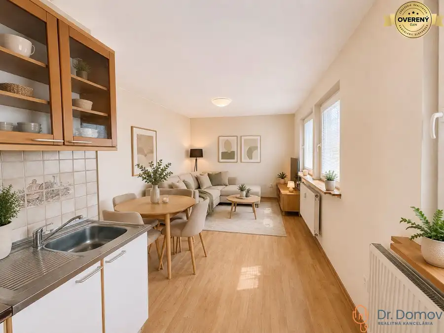
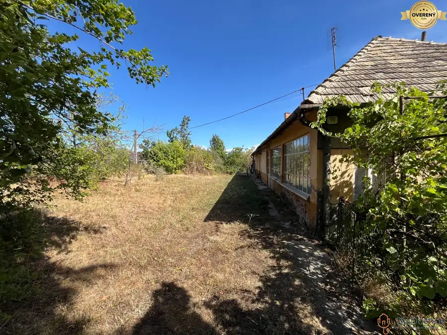
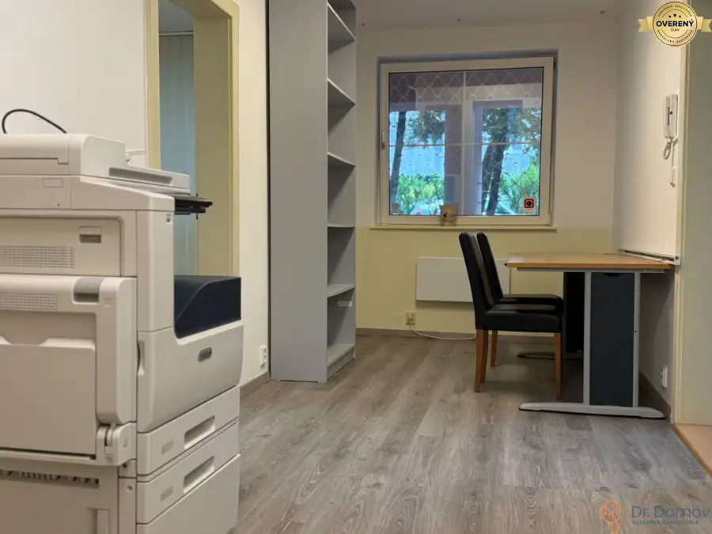

Zrekonštruovaný 2-izbový byt prievozská Ulica, Ružinov
Ružinov, Bratislava
- Dispozícia2-izbový
- Plocha45 m²
- Poschodie1. z 4
- Stavúplne prerobený
- Vlastníctvoosobné
O nehnuteľnosti
Dr. Domov ponúka na prenájom 2-izbový štýlovo a kompletne zariadený byt v bratislavskej mestskej časti Ružinov na Prievozskej Ulici číslo 13/B. Je situovaný na 1. poschodí v 4. poschodovom tehlovom bytovom dome s výhľadom na Apollo Business Center.
Nehnuteľnosť dominuje nadštandardným vybavením a jedinečným dizajnom. Dispozične pozostáva zo vstupnej chodby so šikovne riešeným vstavaným úložným priestorom, kúpeľne so sprchovým kútom a samostatnou toaletou, priestrannej obývacej izby s množstvom úložného priestoru spojenej s kuchyňou a spálne. Interiér je navrhnutý s dôrazom na detail, kvalitu spojenú s funkčnosťou.
Kuchyňa je vybavená kuchynskou linkou s dizajnom, ktorý dotvára celý interiér bytu. Vybavenie kuchyne tvorí drez, indukčná varná doska, elektrická rúra, mikrovlnná rúra, rýchlovarná kanvica, chladnička s mrazničkou a odsávač pár. Obývacia izba je plne zariadená kvalitným nábytkom TV, WIFI a jedálenskou častou so stolom a stoličkami. V spálni sa nachádza veľká posteľ s nočnými stolíkmi a stolnými lampami. Samostatná kúpeľňa je vybavená sprchovým kútom, radiátorom, práčkou a kotlom na ohrev teplej vody.
Prednosťou tejto nehnuteľnosti je kompaktnosť priestoru a vkusne zariadenie na mieru.
ZÁKLADNÉ ÚDAJE:
* lokalita: Prievozská 13, Ružinov, Bratislava II
* poschodie: 1/4
* stav: tehlový bytový dom kolaudovaný v roku 1931
* počet izieb: 2
* celková plocha bytu: 45 m²
* byt prešiel kompletnou rekonštrukciou v roku 2026
* orientácia: Juhovýchod
* vybavenie: byt sa prenajíma kompletne zariadený
* pri bytovom dome parkovisko pre návštevy PAAS
HLAVNÉ BENEFITY:
* kuchyňa a zariadenie na mieru
* kompletné kvalitné zariadenie
* výborná dostupnosť do mesta a na diaľnicu
* zastávka MHD len par minút od bytového domu
* kompletná občianska vybavenosť
* zatiaľ neobývaný
LOKALITA A OKOLIE:
Bytový dom sa nachádza vo vyhľadávanej a obľúbenej lokalite v mestskej časti Ružinov Bratislava II. Lokalita patrí medzi stabilizované obytné územie s kompletnou občianskou vybavenosťou. V okolí nájdete dostatočne množstvo verejnej zelene a parkových plôch. Lokalita má výborné dopravné spojenie do centra mesta, do ktorého sa MHD dostanete za par minút viacerými autobusovými alebo trolejbusovými linkami vrátane 42, 66, 71, 72, 96 a nočnými spojmi. Čo zabezpečuje pohodlné cestovanie bez potreby využívať automobil. Bytový dom sa nachádza v blízkosti Apollo Business Center, v ktorom nájdete rôznorodú ponuku obchodných reťazcov, prevádzok stravovacích zariadení, služieb a verejných inštitúcii. V lokalite nájdete školy, škôlky, obchody, reštaurácie, kaviarne zdravotné strediská aj športoviská. Lokalita zabezpečí pohodlné a bezproblémové dopravné napojenie autom aj mestskou hromadnou dopravou do centra mesta aj na hlavné dopravné ťahy. Výhodou je tiež blízkosť biznis centier ako Nivy či Eurovea.
CENA: 750,-EUR/mesiac + 100,-EUR energie.
Pri podpise Nájomnej zmluvy sa platí jednomesačné nájomné, vratná kaucia (depozit) vo výške 800,-EUR.
V cene je zahrnuté vypracovanie nájomných zmlúv advokátskou kanceláriou, preberacích protokolov s protokolárnym odovzdaním nehnuteľnosti.
Byt je k dispozícii ihneď
Majiteľ preferuje dlhodobý prenájom.
Teším sa na naše stretnutie!
Text a fotografie sú autorským dielom a majetkom realitnej kancelárie Dr. Domov
Parametre
| Celková rozloha | 45 m² |
|---|---|
| Poschodie | 1/vyššie poschodie |
| Počet poschodí | 4 |
| Počet izieb | 2 |
| Vlastníctvo | osobné |
| Stav | úplne prerobený |
| Odvoz odpadu | áno |
| Kúpeľňa | vaňa |
| Vykurovanie | vlastné - elektrické |
| Postavené z | tehla |
| Zariadenie | zariadený |
| Zateplený objekt | áno |
| Bezbariérový prístup | nie |
| Okná | plastové |
| Orientácia | juhovýchodná |
| Dátum zverejnenia | 16. 6. 2026 |
Kde to je
Mohlo by Vás zaujímať

Byt10 140 000 €Znížená cena! veľký 3-izbový byt, pôvodný stav, Most pri Bratislave Most pri Bratislave 3-izbový62.87 m² Drevodom typu Okál je celkovo 3-podlažná stavba a obsahuje prízemie s pivničnými kobkami a 2 nadzemné poschodia bez výťahu. Ide o stavbu, ktorej…
Pozemok3 105 000 €Na predaj stavebný pozemok s možnosťou výstavby RD, Malé Krškany Male-krskany, Malé Krškany 2500 m² Dr. Domov ponúka na predaj pozemok v pokojnej obci s vidieckym charakterom Malé Krškany iba niekoľko minút od centra Levíc. Ideálne miesto pre…
Nebytové priestory10 Cena dohodouNa prenájom atraktívny nebytový priestor na ulici Koprivnická Dúbravka, Bratislava 3-izbový65 m² Dr. Domov ponúka na prenájom zariadený nebytový priestor vhodný na administratívne využitie na ulici Koprivnická 36 v kaskádovom bytovom dome v…